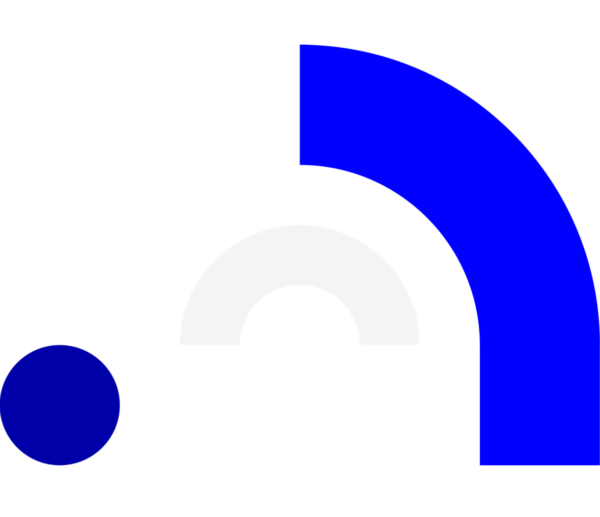

Bootcamp de Desarrollo Web y Móvil
Nuestro Bootcamp de Desarrollo Web y Móvil Full-Time es un curso intensivo de programación, online o presencial, y completamente práctico que te convertirá en un Programador Junior Full-Stack para añadir valor en la empresa desde el primer día.
Nuestro bootcamp te lleva de 0 a Full Stack para convertirte en desarrollador de aplicaciones web con las tecnologías más demandadas del mercado actual. El MEAN Stack. Maquetación con HTML5, CSS3, BootStrap y Material de Google para conseguir los mejores resultados visuales y de usabilidad «UX/UI». Node.js, Express.js, MySQL y MongoDB para el desarrollo de API REST capaces de gestionar datos y ofrecer servicio a nuestra aplicación web. Aprenderás a programar aplicaciones web y móvil utilizando los frameworks de Angular e Ionic. Despliegue de servicios en la nube con Amazon Web Services (AWS). Por último se pondrá en práctica lo aprendido en el bootcamp realizando un proyecto final con metodologías Agile y Scrum, simulando un entorno de trabajo real.

Quieres reorientar tu carrera profesional
Inicia tu carrera en la industria tecnológica formándote como programador, el perfil más demandado del mercado laboral.
En este curso aprenderás todo lo necesario para empezar a trabajar como programador junior.
Buscas independencia económica
Si acabas de graduarte y quieres obtener un trabajo que te otorgue independencia económica y experiencia laboral.
Destaca tu perfil para siempre sea cual sea tu área profesional, este curso es la forma más rápida y efectiva de conseguirlo.
Eres emprendedor digital o quieres crear una startup
Nuestro Bootcamp fomenta la creatividad y el carácter emprendedor.
Con el programa imaginarás un proyecto, aprenderás a desarrollarlo y a liderar y gestionar un equipo técnico.
“Cuando descubrí el Bootcamp pensé que sería mi oportunidad para lanzarme. Lo mejor de Codenotch es la metodología, está muy enfocada a lo que es la vida real y eso te obliga a esforzarte más para prepararte para lo que será después nuestra vida como desarrolladores.”
Felipe Bayon | Desarrollador de front-end en Accenture
«Antes de terminar el curso ya tenía una oferta de trabajo en una compañía con sede en Madrid. Hacer el bootcamp de Codenotch sencillamente me ha cambiado la vida.»
Javier Marzán | Desarrollador en Autentia